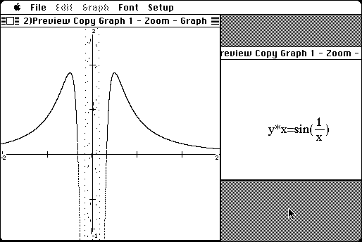

Download
grafeq115.zip (115K) GrafEq 1.15 repackaged into a zipped hfs disk image and checksum file. The disk image can be mounted with Mini vMac.
grafeq115.sit.hqx (156K) GrafEq 1.15 in the original format.
copyright: Pedagoguery
mod date: Nov 12, 1998
license: shareware
official url :
Pedagoguery Software Downloads
"For graphing, and otherwise exploring, mathematical relationships." For "System 6 or 7".

If you find these downloads useful, please consider helping the Gryphel Project, which hosts them.
Here are the md5 checksums for the downloads, signed with Gryphel Key 5:
--------- GRY SIGNED TEXT --------- aab0ab611469498382cc966a36f31a30 grafeq115.zip 3a161f670d1613e85b99c56973cf3de5 grafeq115.sit.hqx ------- BEGIN GRY SIGNATURE ------- Gry/4Xa8CFcUzxdN/Dg+CHofOTh0zNy7E3z0ePBs4sc30q8DtPShHHWOX7+z2H5H Hs0V9Ff3xmsyd9XRrXR5ufp9k7rgmzrh5a93x09C78McnG9sUxO/oottnpaTMsAw S0nbnh8fbnwRv345YmCstvG353KBAYEM97r0XWjG0nJY0KQEpuyNF2QppMsjZIgI -------- END GRY SIGNATURE --------